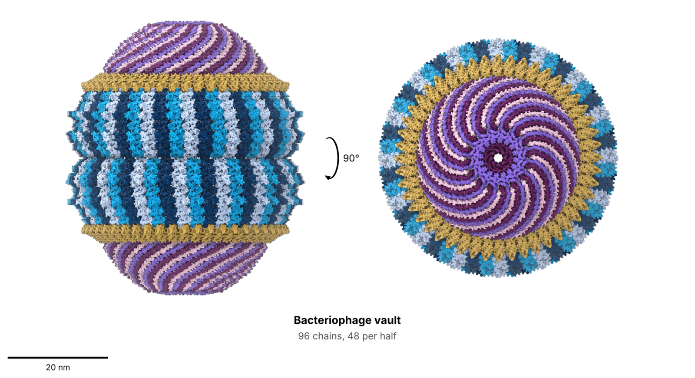
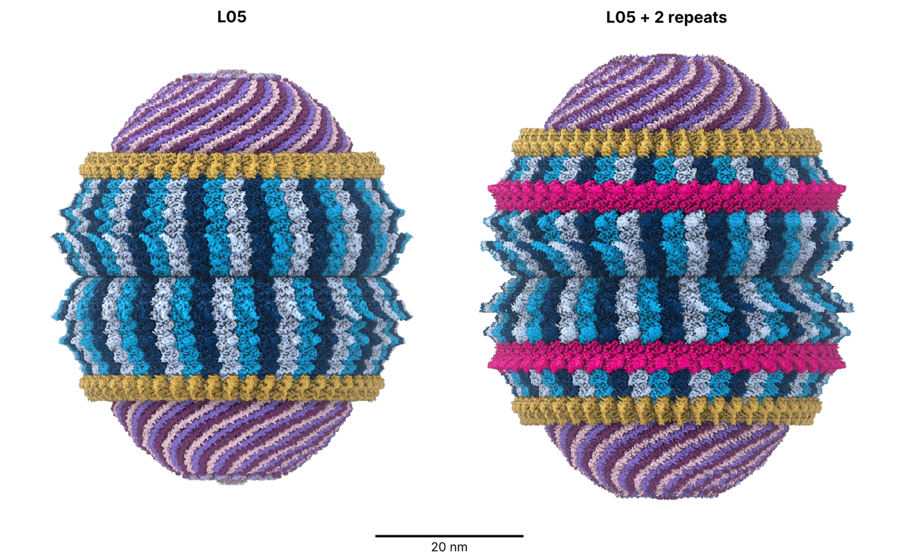
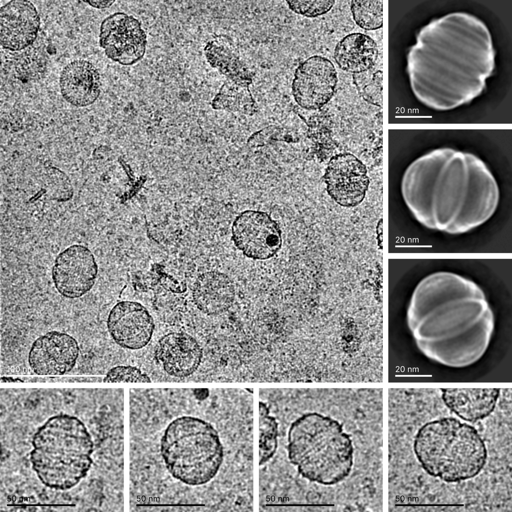

We’re sharing another finding from Anthropic’s biology research lab: the first 3D structure of a vault particle found in prokaryotic cells. Vaults are large, hollow barrels of protein found in cells across the tree of life, and their function is still unknown. Below, we describe how Claude helped at each step of this research: searching across sequence literature, optimizing a method of isolating particles, and mapping the vault’s structure. More information is in our preprint, which we’ve submitted to bioRxiv; we’ll update the link as soon as it goes live.
Biological cells were first detected in 1665, but more than three and a half centuries later, much of how they work remains unknown. Until relatively recently, the existence of some crucial components, let alone their function, was controversial. Even today, more than a third of the roughly 4,400 genes in one of the most comprehensively studied cells, the bacterium E. coli, remain poorly understood. Another such enigma is the vault particle.
A vault particle is a large, hollow protein shell found in nearly all the cells in our body. It was discovered in 1986 by Leonard Rome and Nancy Kedersha, but its function remains elusive. At roughly three times the mass of a ribosome, it’s one of the largest known molecular complexes in eukaryotes—organisms with complex cells, such as mammals (as opposed to simple, usually single-celled “prokaryotes,” such as bacteria). Vaults take their name from their shape. When observed under an electron microscope, the ribbed shell reminded Dr. Rome and Dr. Kedersha of the vaulted ceiling of a cathedral. In mammals, the shell is made of 78 copies of the major vault protein, arranged as two identical halves joined at the middle.
Vaults are found across most of the eukaryotic tree, from slime molds to humans, so scientists believe that they must do something useful. Researchers have proposed various functions, including transporting molecules between the nucleus and cytoplasm, protecting cells from toxic compounds such as cancer drugs, and supporting innate immunity, but none of these proposals have been conclusively confirmed. Other studies have shown that mice lacking vaults still survive, which suggests that vaults may be necessary only under specific environmental conditions. Still, the question remains: why would evolution retain something so large if it didn’t have an important function?
Interested in whether Claude could help make progress on this long-standing open problem, our biology research team has been investigating vaults. We haven’t yet determined their biological function, but we did find that many more vault proteins across the tree of life, including those in prokaryotes and the bacteriophages that infect them, can assemble into complete vault-like particles. Related proteins had already been found in the genomes of both prokaryotes and phages, but to our knowledge no one had shown that they assemble into vaults.
A vault in a prokaryotic cell gives researchers a simpler system to study. Compared with mammalian cells, bacteria are quick to grow, which makes it easier to investigate where vaults came from, what their basic structure looks like, and what, if anything, they contain. Studying the bacterial relatives of human proteins has been informative before. Bacterial versions of cGAS–STING signaling, gasdermins, and viperins revealed the microbial origins of these human immune defenses. In those cases, their function in humans was already known. For vaults it is not, and their prokaryotic relatives may help reveal it.
Here, we describe how we uncovered the molecular structure of a vault from a bacteriophage. Bacteriophages are viruses that infect bacteria. Like all viruses, they hijack their host cells to make their proteins, so this vault would be built inside a bacterium, a prokaryotic cell. The vault is built from 96 copies of a single protein, compared with 78 in human vaults. By duplicating part of the protein, we engineered the vault to be even larger. Together, these results shed light on how such complexes assemble and suggest how they could be adapted for biotechnology—for example, as nanocapsules for delivering enzymes.

This work also demonstrates our team’s wider aim: to speed up research in fundamental biology by building Claude into every step of the process. Under our direction, Claude searched protein databases, designed the DNA constructs, optimized the isolation method, and processed the microscopy data. As a result, a vault purification that conventionally takes three days took us about 90 minutes, and a first structural model was ready 34 hours later, which we estimate would normally have taken us weeks.
Despite this progress, there is still much to be learned about these perplexing structures. When we shared the structure with Dr. Rome, whom we brought on to advise us on this research, he said:
Figuring out the function of vaults is still enormously challenging. I am pleased that Anthropic has so much good data. Now, other people will be working on this problem … The broadness of Anthropic’s finding[s] suggests that it is going to be a complicated function and an interesting ride.
Our lab is releasing these findings early to continue to show the scientific community how Claude can be used for discovery. You can read more about our results and methods in our preprint, and we will be releasing the structures and additional data soon.
A vault-like structure in prokaryotes
We uncovered the vault structure using cryo-electron microscopy (cryo-EM), in which many copies of a particle are flash-frozen and imaged with an electron beam, before being combined into a single 3D model. The vault is built from 96 copies (48 copies per half) of a single phage protein, which we call L05, with a combined mass of about 9.5 megadaltons. By contrast, the mammalian version has 39 copies per half. The phage-derived vault is also shorter and wider: roughly 54 nanometers long and 45 wide, compared with 67 by 40 in mammals. Despite being shorter, it encloses about 25% more volume because it is more spherical. The protein chain that makes up its wall is built from seven repeating segments stacked end to end, rather than the nine in mammalian vaults, and its end caps are flatter. It’s among the largest protein shells ever identified in prokaryotes.
One notable feature of its structure is how the caps close. A wall 48 copies around must narrow toward the pole, and it does so in three steps, like a tiered dome. In every group of three neighboring copies, one ends at the first step, one at the second, and one continues to the tip. The three copies are identical along the wall, but take different shapes (conformations) in the cap.
Given that we can make this vault in the lab and isolate it quickly, we also experimented with altering its structure to learn more about how these proteins assemble. Working with Claude, we made 15 altered versions of the protein, most with changes at the points where neighboring copies touch. Some single changes near the cap were enough to prevent the shell from closing: in place of sealed vaults we saw open, rosette-like particles, which shows that this region is needed to seal the shell.
We also tried making the vault even bigger. Ordinarily, the wall is built from seven repeating segments. When we copied two of them, giving the protein nine—the same number as in the human vault—it assembled into even larger vault particles, increasing the enclosed volume by approximately 20%. These experiments demonstrate how vaults could have changed size over their evolutionary history by duplicating pieces of their own wall without disrupting how they assemble.

Finding, isolating, and mapping a new vault with Claude
Part of the reason vaults have remained unexplained for 40 years is that they are missing from the organisms biologists rely on most for genetic experiments, including baker’s yeast, fruit flies, and nematode worms. In mice, which do have vaults, animals that are bred without a vault partner protein or the vault RNA develop normally, leaving no obvious defect to follow up. In recent years, bioinformaticians identified distant relatives of the vault protein in prokaryotes, but it wasn’t clear whether these proteins formed vaults.
Our team set out to answer that question. The research required several steps: surveying genetic sequences to find where vault proteins occur across the tree of life, producing and isolating the most promising candidates to test whether they actually assemble into vault-like particles, and determining the structure of one of the particles to see how its chains fit together.
We began by using Claude Science to search for the vault protein’s relatives across a database of about 15 billion predicted proteins. They turned out to be rare but widely distributed, present in 29 major groups (phyla) of bacteria and four of archaea (the other main group of prokaryotes) but in less than 1% of species with a sequenced genome. We then chose 44 of these proteins and tested each in a cell-free system to see which genes yielded full-length protein and how much. We chose the proteins, and Claude turned each protein sequence into DNA tailored to the host cell, added the control sequences that switch a gene on, and prepared the designs for ordering. We moved the best performers into living E. coli bacteria, where 15 of 24 produced soluble protein.
Next, we needed to isolate the particles. The conventional method, developed for eukaryotic vaults, spins the sample through a tube of increasingly dense sugar and takes approximately three days. To speed this up, we decided to try size-exclusion chromatography. In this process, the sample flows through a column of porous beads. In a process called fractionation, small molecules get stuck in the pores, while the vaults, which are too big to enter, come out first, in what’s known as the void volume.
Claude first argued against taking the chromatography approach, because clumps of misfolded protein come out in that same void volume. We went ahead anyway, and Claude helped make it work by recommending a specific column as well as methods to track the vault protein and check whether particles had formed. Claude then proposed loading the contents of ruptured cells straight onto the column with no purification beforehand. We were reluctant at first because these columns are expensive, and the raw contents of ruptured E. coli cells can clog them or cause contamination. But we were willing to test an unconventional idea, and it worked.
We are not the first group to isolate vaults on sizing columns, but our optimized method takes about 90 minutes from cells to microscopy grid instead of days. Under an electron microscope, seven of the 15 proteins had assembled into vault-like particles.
Cryo-EM confirmed the vault shape for four of those seven, two from phages and two from bacteria. We chose one of the phage proteins, L05, for the detailed structure described above because it was among the best at forming complete, closed particles. Determining a biomolecular structure often takes weeks or months of manual work with specialized software. We directed Claude through the whole process. Working in an internal multi-agent harness with access to internal compute resources, Claude set up an open-source processing software (RELION) and ran each step, while we advised on the analysis decisions. A first full model was ready in 34 hours, and the final maps were ready about a week after processing began.

Claude also pointed out a feature of the structure we can’t yet explain. A pocket partway up each of the 96 protein copies holds a small molecule that shows up clearly in the map but that we haven’t been able to identify. Claude found that its shape resembles coenzyme A, a common helper molecule that cells use to shuttle chemical groups around. If it is coenzyme A, or something similar, it would be an early hint at a possible function.
A new way of doing science
For us, this was a dramatically different way of doing science. None of us had worked with a protein assembly this large, and we had limited experience in structural biology. We took the project on anyway, because Claude could make up for what we didn’t know and rapidly perform analyses that would otherwise have taken us much longer.
In under four months, we screened dozens of candidate vaults, prepared samples for the microscope, and solved the first vault structure found in prokaryotes. Most of this work could be achieved by a typical lab with access to existing Claude products. Only the cryo-EM analysis, which used hundreds of GPUs in parallel to save time, required more computing resources than might be available to an academic institution.
Working this way also showed us where Claude needed improvement. A protocol it wrote called for a growth medium containing an additive that interferes with getting DNA into cells, which set the project back by two weeks. Early in the cryo-EM processing, it skipped a standard step and produced a flawed map blended with its mirror image, and we told it to stop improvising (“Please let’s do normal things unless they don’t work”).
We have used what we’ve learned to inform Claude’s development. We shared our lab notes with the ML researchers who train Claude, so they could see where the model went wrong. This has informed the kind of data Claude learns from. Over the course of the project, Claude got much better at these tasks as new models arrived, making seemingly fewer errors in DNA construct design and better identifying potential pitfalls in experiments. In areas we knew well, we caught mistakes quickly, but they cost us time in areas we didn’t. Overall, we found that the benefits of working this way far outweighed the drawbacks, and Claude has become integral to our work.
So far, we have made these vaults only in E. coli, and have yet to test whether they form in the bacteria and phages where they’re naturally found. More work is needed to determine the function of these particles, and our work only deepens the mystery. As Dr. Rome put it:
Will we find out that they are all doing the same thing? Or will we see an evolutionary development of vault function? Maybe they are doing the same thing as human vaults, and that is also very interesting.
We will continue our research into the function of vaults, and will share more as this work progresses.
Work with us
We are releasing the details of our work in our technical report. If you have an idea for what these vaults might be doing, or a system in which to test it, we would like to hear from you: mdurrant[at]anthropic.com, nicholasp[at]anthropic.com.